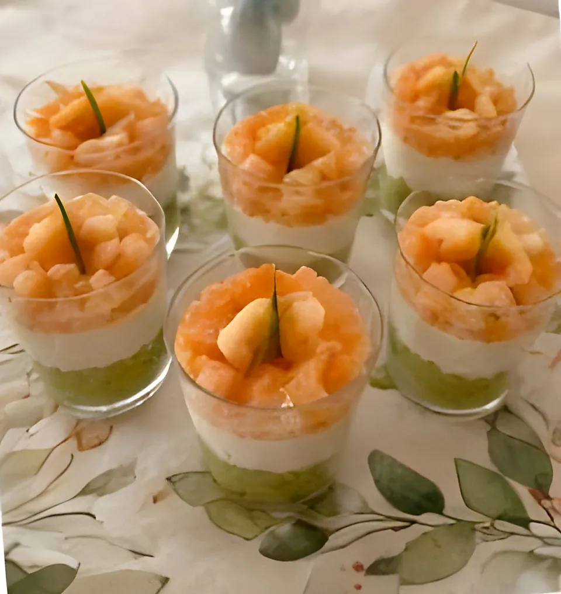
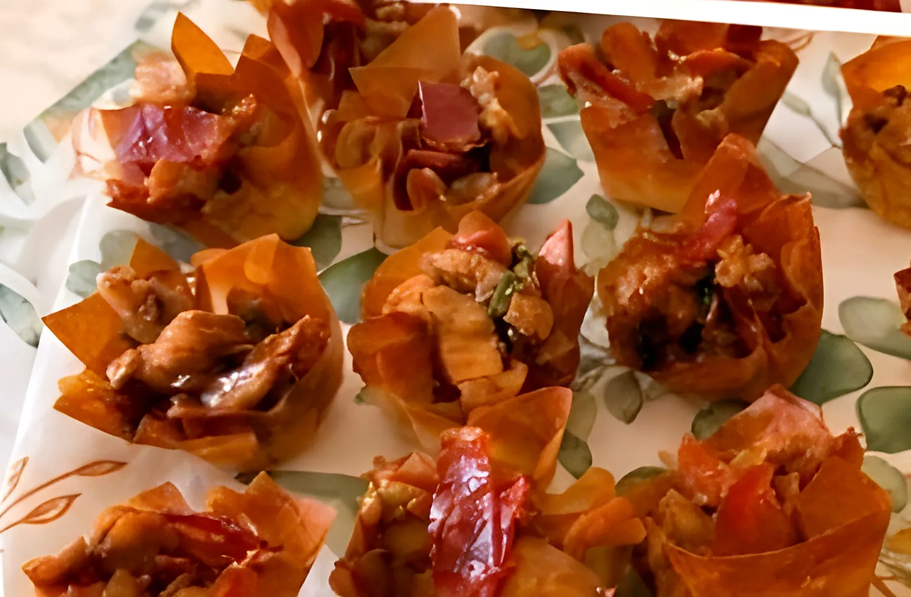
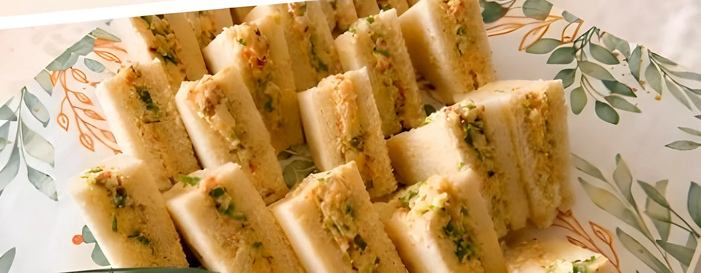
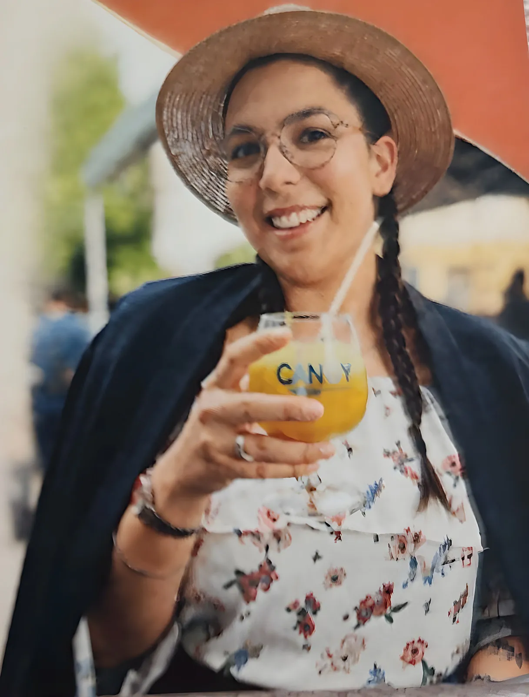

Cheffe à domicile · Traiteur
Faire voyager vos papilles
sans quitter votre table.
Cuisine mauricienne, espagnole et d'ici, faite maison. Je crée des prestations 100 % sur mesure, adaptées à vos envies, à votre budget et à vos besoins alimentaires. Buffets apéritifs, buffets froids, repas complets et spécialités mauriciennes, à Villeneuve-sur-Lot et alentours.
- 100 % fait maison
- Menus adaptés à tous les régimes
- Devis personnalisé

Voyager peut parfois commencer autour d'une simple assiette.
La touche mauricienne et espagnole
Un mélange subtil entre chaleur, épices, couleurs et authenticité. Je souhaite vous offrir une cuisine faite maison, généreuse, conviviale et pleine de saveurs.
-
Maurice
Rougail, caris, achards : la cuisine de l'île, colorée et pleine de soleil.
-
Espagne
Sobrasada, poivrons rôtis, tapas à partager : l'esprit des tablées espagnoles.
-
Saveurs du monde
Et les classiques d'ici, revisités selon vos envies et la saison.
Mes prestations
sur-mesurePour tous vos moments de vie : mariages, anniversaires, baptêmes, événements professionnels et réunions de famille.

Buffet apéritif
L'art de l'apéritif maison : bouchées généreuses et raffinées.
Découvrir
Buffet froid
Un buffet gourmand, élégant et convivial, composé sur mesure.
Découvrir
Repas complets
De l'entrée au dessert, un menu pensé avec vous.
DécouvrirCuisine du monde
L'île Maurice s'invite à votre table.
DécouvrirL'art de l'apéritif maison
Des bouchées généreuses, raffinées et préparées avec passion.


Saveurs
mauriciennes
Une cuisine généreuse, colorée et pleine de soleil, pour faire voyager vos convives le temps d'un repas.
- Fait maison
- Authentique
- Convivial
- Sur mesure
L'île Maurice s'invite à votre table.

Qui se cache derrière L'Alliance des saveurs ?
Marie-Mélanie
Cheffe à domicile passionnée, créative et gourmande, je mets tout mon cœur dans chaque plat que je prépare pour vous.
L'Alliance des saveurs est née d'une famille de femmes qui ont cru en moi bien avant que j'y croie moi-même. Aujourd'hui, ce rêve grandit à chaque table que je dresse.
Découvrir mon histoireDes menus adaptés à tous les régimes
- Végétarien
- Sans gluten
- Sans lactose
- Halal
- Allergies et intolérances alimentaires
Vous permettre de profiter pleinement de vos invités pendant que je m'occupe du reste.
Vous étiez invité ?
votre avis compteUn buffet, un anniversaire, un mariage… Si vous avez goûté ma cuisine, quelques mots de votre part aident d'autres familles à me faire confiance.